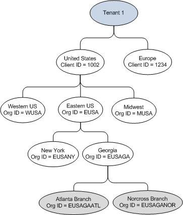

Administrators with the proper permissions are able to create a root client organization (a client organization with no parent) and if required, child organizations under the root client organization.
Use organizations to separate information. For example, users within a child organization can only view applications in the child organization, but users within a parent organization can view applications in all of the child organizations. When you create a child organization, that organization inherits information from the parent organization (such as contact details and users), but it does not inherit CRA or business bureau assignments from the parent organization.
You must configure CRA and business bureau access parameters before you can assign them to an organization. If you are using the
Data Acquisition Module to pull consumer credit report data, you must assign CRA parameters to organizations before processing applications for that organization. If you are using the
Application Processing Module to obtain business data, you must assign business bureau access parameters to organizations before processing small business applications for that organization.
The following figure provides an example of a tenant, client, and organization structure. This example shows how a tenant can have two root organizations: the United States and Europe. The Western, Eastern, and Midwestern regions of the United States are considered child client organizations under the root client organization. These child client organizations can have other child client organizations underneath them, such as New York and Georgia. You can refine the child client organization further by adding the Atlanta and Norcross branches as child organizations of the Georgia child client organization.
| Note There is only one tenant currently preconfigured within
Origination Manager
5.0.
|

Example of a tenant, its clients, and the clients' organizations
To create an organization, perform the following steps:
-
In the administration navigation pane, click
Organizations.
-
Perform one of the following actions:
- To create a new parent organization, click
Create.
- To create a new child organization, select a parent from the list and click the
Create child organization icon in the selected row.
-
Enter a name and code for the new organization. It is recommended that the name and organization code within the hierarchy of the root organization be unique. The organization code associates an application with an organization. The code is required when used in web services that assign an organization to an application.
-
Select the organization type.
-
(Optional) Enter a client ID and description for the organization.
-
Enter contact details such as country, address, and phone number or select the
Use parent organization contact details check box to populate the fields with the address of the parent organization.
The
Use parent organization contact details check box only appears if you are creating a child organization.
-
To set the CRAs that the
Application Processing Module uses for the organization, click
Select CRAs to assign.
CRA assignments are not inherited from the parent organization. If you are creating a child organization, you must select the CRAs.
-
Select the CRAs for the organization by selecting the check box next to the CRA and clicking
Select.
If you select more than one CRA, the first CRA in the list is designated as primary, the second as tertiary, and the third as tertiary.
-
If you select more than one CRA, specify the order by performing the following steps:
-
Select the CRA and click the move up arrow or move down arrow.
-
To set the business bureau configuration for the organization, click
Select business bureaus to assign.
-
Select up to two business bureau configurations and click
Select.
-
(Optional) If you selected two business bureau configurations, select the primary configuration to assign to the organization in the
Business Bureau Configurations pane. The configuration you do not select becomes the alternate bureau for the organization.
-
Select one or more users from the list of available users and click
Add. You must assign a user to the organization or you will not be able to search for applications based on this organization.
-
Click
Create.
To navigate away from the page, click
Back to Organizations or click one of the links at the bottom of the page to maintain users or user groups.